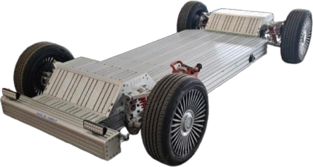
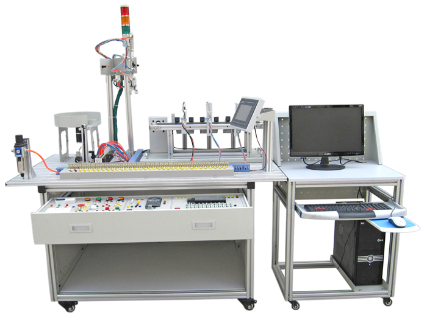
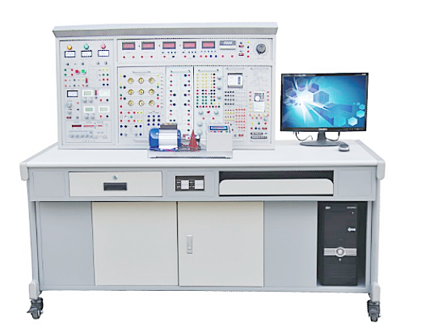
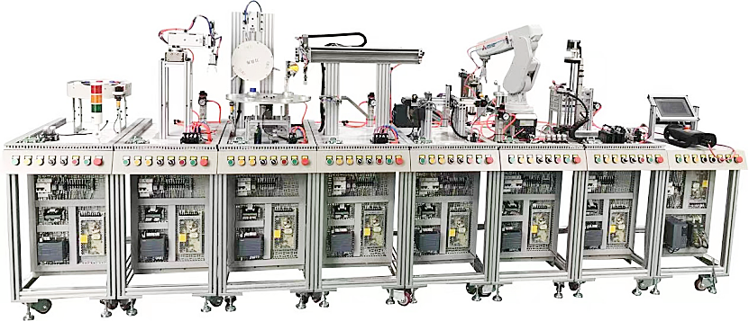
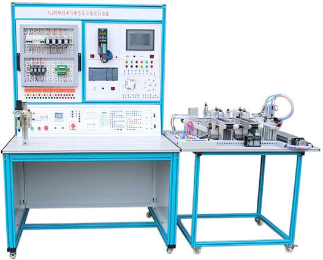
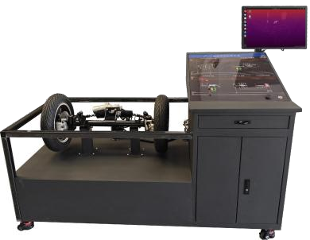

PLC实训台 · 工业机器人 · 液压气动 · 智能制造 · 电工电子 · 仪器仪表

支持S7-1200/1500系列，集成数字量/模拟量输入输出、通信模块

FX3U/FX5U系列，支持梯形图、SFC、ST语言编程

CP1E/CP1H系列，集成NC模块、模拟量模块

ABB IRB120/2600，FANUC LR Mate 200iD，集成视觉系统

高速精准装配应用，集成输送带和视觉定位
人机协作安全设计，无需围栏，适合教学演示

工业级液压元件，可搭建多种回路
模块化设计，快速搭建气动回路
集成PLC、机器人、RFID、MES系统
堆垛机、输送线、WMS系统集成
电磁、涡街、涡轮、超声波流量计
智能变送器，高精度，支持远程校准
磁翻板、雷达、差压、浮球液位计
根据客户需求定制自动化生产流水线，含集成控制、检测、包装等模块
针对特定工序设计的专用自动化设备，提升生产效率与一致性
精密工装夹具定制，满足自动化设备的精准定位与固定需求